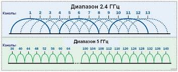

Ежедневная информационная лента нашего журнала держит вас в курсе самых главных событий из мира ИТ, компьютерного производства, полупроводниковых технологий и корпоративных слияний. Мы отбираем только проверенные факты, официальные анонсы вендоров и инсайды от надежных отраслевых источников.
Комитет стандартизации JEDEC официально опубликовал технические спецификации оперативной памяти следующего поколения — DDR6. Базовые модули начнут свою работу с эффективной частоты в 8800 МГц, а в режиме разгона вплотную приблизятся к психологической отметке в 17 ГГц. Массовое производство микросхем начнется ближе к концу года, первыми новые модули получат серверные платформы.
Крупнейший тайваньский полупроводниковый гигант TSMC объявил о полном переходе заводов Фабрики 20 на технологический процесс A14 (1.4 нм). Новая геометрия кремниевых транзисторов позволит увеличить плотность размещения элементов на кристалле на 20% по сравнению с 2-нанометровыми аналогами. Ожидается, что первыми заказчиками сверхтехнологичных процессоров станут компании Apple и AMD.
Консорциум Wi-Fi Alliance анонсировал запуск сертификации устройств с поддержкой беспроводных сетей нового поколения. Главным упором в Wi-Fi 8 стала не пиковая скорость передачи данных, а максимальная надежность соединения и стабильность задержек (пинг) в условиях сильной зашумленности радиоэфира многоквартирных домов за счет интеллектуального перераспределения частотных каналов.
Для вашего удобства редакция составила сводную таблицу крупнейших мировых ИТ-мероприятий текущего года, на которых будут представлены главные железные новинки:
| Название ИТ-выставки | Место проведения | Даты проведения | Главная ожидаемая тема |
|---|---|---|---|
| Computex 2026 | Тайбэй, Тайвань | Июнь 2026 | Новые материнские платы и архитектуры CPU |
| Gamescom 2026 | Кёльн, Германия | Август 2026 | Демонстрация игр на движках нового поколения |
| ИИ-Саммит Глобал | Сан-Франциско, США | Октябрь 2026 | Локальные нейросети для ПК и операционных систем |
| CES 2027 (Анонс) | Лас-Вегас, США | Январь 2027 | Потребительская электроника, новые видеокарты |
Каждое поколение беспроводной связи усложняет алгоритмы кодирования сигнала. Посмотреть графическую схему распределения частотных диапазонов и ширины каналов в современных роутерах вы можете ниже:

Нажмите на диаграмму для просмотра схемы каналов в оригинальном разрешении.